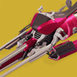
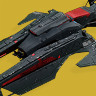
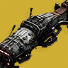
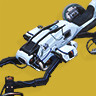

Destiny 2 · Compendium
快雀全图鉴Sparrow Compendium
收录当前版本全部 — 台快雀（Sparrow）——守护者的标配反重力悬浮摩托。包含异域、传说等全部稀有度，附中英文名称、风味文本与获取来源。数据取自 Bungie 官方 Manifest 公开数据。不了解命运2？先看 30 秒入门指南。
检索与字段结构参考：命运2中文维基 · 物品检索器
Beginner's Guide
什么是「快雀」？
给第一次接触《命运2》的朋友：30 秒搞懂这本图鉴在收藏什么。
在《命运2》的世界里，守护者从不靠双腿赶路。按一下按键，一台反重力悬浮摩托就会在你掌心凭空成形——这就是快雀（Sparrow）。它源自「旅行者」带来的黄金时代科技：平时折叠成一小块光能物质随身携带，召唤时瞬间展开成一台全尺寸悬浮摩托，是每位守护者的标配座驾。
和机壳一样，快雀也是纯外观收藏——所有性能完全一致，但造型千差万别：军用侦察艇、霓虹竞速车、黄金时代的复古车型、节日限定的驯鹿雪橇……对守护者来说，怎么赶路不重要，用什么姿势赶路才重要：快雀就是你在星球表面的脸面。
「每秒都很重要。」

传输召唤Transmat · 随叫随到
快雀平时收纳于守护者的光能之中，召唤的瞬间由物质传输技术在掌心组装成形——所以无论你把它「丢」在星球的哪个角落，它永远都在，也永远崭新。

油门与过载Boost · 敢快就要敢炸
按住油门进入过载加速，但引擎过热时快雀会当场爆炸——顺便把没来得及跳车的你一起送回复活点。老手会在爆炸前一秒侧身跳离，帅是暂时的，摔是永远的。

特技与竞速SRL · 车技时刻
空中轻点即可翻滚转体，落地还能衔接短暂加速；限时活动「快雀竞速联盟 SRL」曾把守护者送上冰封赛道——落地失误的火星四溅，是很多守护者的共同回忆。

收集与获取Source · 每雀有故事
与机壳类似：Eververse 光尘商店、赛季通行证、突袭与地牢的荣耀见证、活动限定……本图鉴中异域 416 台、传说 147 台——收集党的车库永远少一台。
快雀SPARROW守护者的反重力悬浮摩托 = 本图鉴主角
传输召唤TRANSMAT光能收纳、按键瞬发的召唤机制
过载加速OVERCHARGE按住油门的冲刺状态，过热会爆炸
SRLSPARROW RACING LEAGUE限时开放的官方快雀竞速活动
光尘BRIGHT DUSTEververse 商店的免费货币，做任务即可赚取
守护者GUARDIAN被机灵复活、驾驭光能的战士，也就是「你」
NO SIGNAL没有找到匹配的快雀，换个关键词试试。
HASH 已复制